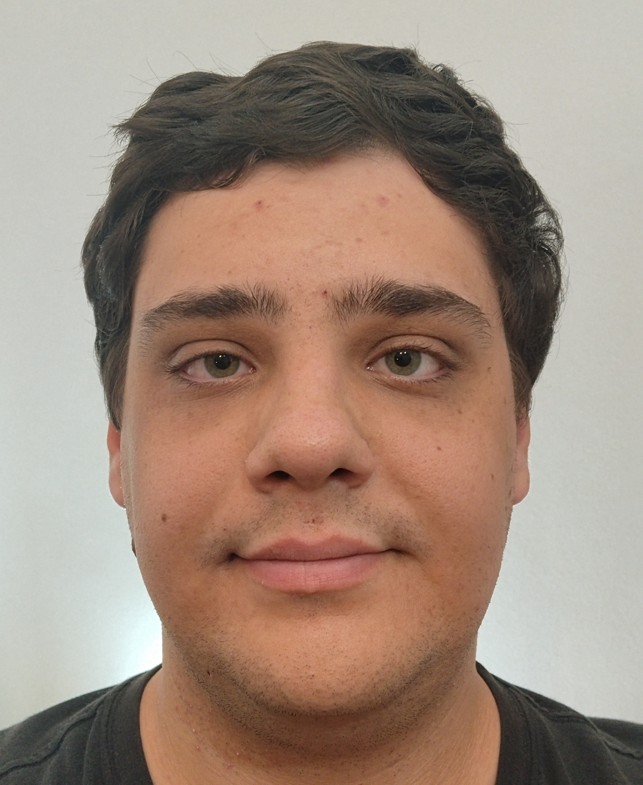

I have a Bachelor's degree in Mathematics from the National and Kapodistrian University of Athens and a Master's degree in Algorithms, Logic and Discrete Mathematics.
I am currently about to start a PhD at the University of Cambridge, under the supervision of Professor Anuj Dawar, working in the area of Descriptive Complexity.
My academic interests lie primarily in Mathematical Logic, Graph Theory, Set Theory, Recursion Theory and Computational Complexity.
Outside of mathematics, I also enjoy programming and exploring puzzles similar to the Rubik's Cube. In particular, I have solved a 20×20×20 Rubik's Cube and a 4D 3×3×3×3 Rubik's Cube on a computer. For the latter, look for my name in Greek (Μανώλης Λάρδας) here.
You can see my CV here.